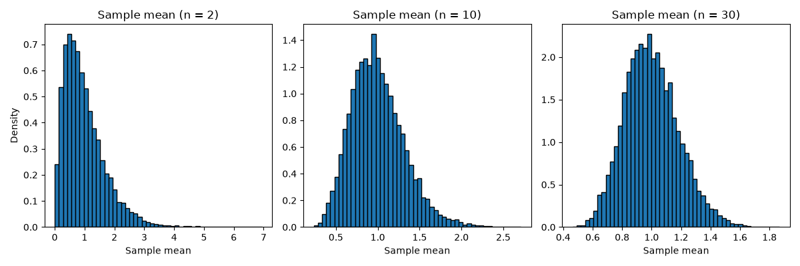

6. 標本分布と中心極限定理
標本から計算した平均値は、どの標本を取り出すかによって値が変わります。この章では、標本平均がどのようにばらつくかを調べ、推定と検定の土台となる中心極限定理を、乱数を使ったシミュレーションで確かめます。
6.1. 統計量と標本分布
標本平均や不偏分散のように、標本から計算する値を統計量といいます。母集団から標本を無作為に取り出す場合、どの標本が得られるかは確率的に決まるため、統計量も確率変数です。統計量が従う確率分布を標本分布といいます。
以下では、平均値 \(\mu\)、分散 \(\sigma^2\) の母集団から、大きさ \(n\) の標本 \(X_1, X_2, \ldots, X_n\) を互いに独立に取り出すとします。標本平均を次のように表します。
6.2. 標本平均の期待値と分散
標本平均の期待値と分散は、次のようになります。
1 つ目の式は、標本平均は平均的に見て母平均に一致することを表しています。2 つ目の式は、標本の大きさ \(n\) が大きいほど、標本平均のばらつきが小さくなることを表しています。
標本平均の標準偏差 \(\sigma / \sqrt{n}\) を標準誤差といいます。標準誤差は \(\sqrt{n}\) に反比例するため、標準誤差を半分にするには、標本の大きさを 4 倍にする必要があります。
6.3. 大数の法則
標本の大きさ \(n\) を大きくすると、標本平均 \(\bar{X}\) は母平均 \(\mu\) に近づきます。これを大数の法則といいます。たとえば、サイコロを振る回数を増やすと、出た目の平均値は期待値 \((1 + 2 + \cdots + 6) / 6 = 3.5\) に近づきます。
6.4. 中心極限定理
母集団がどのような分布であっても（分散が有限であれば）、標本の大きさ \(n\) が大きいとき、標本平均 \(\bar{X}\) の分布は正規分布 \(N(\mu, \sigma^2 / n)\) で近似できます。これを中心極限定理といいます。
中心極限定理により、母集団の分布がわからなくても、標本平均については正規分布を使って確率を計算できます。これが、推定と仮説検定の考え方で正規分布や t 分布を使う理由です。
6.5. Python でシミュレーションする
次のプログラムは、2 つのシミュレーションを行います。
大数の法則: サイコロを 100,000 回振り、最初の 10 回、100 回、……までの出た目の平均値を表示します。
中心極限定理: 平均値 1、標準偏差 1 の指数分布から、大きさ \(n\) の標本を取り出して標本平均を計算します。これを 10,000 回繰り返し、標本平均の分布を調べます。指数分布は左右対称ではなく、右に長い裾を持つ分布です。
ch06_sampling_distribution.py をダウンロードする
1"""第 6 章: 標本分布と中心極限定理。
2
3乱数を使ったシミュレーションで、大数の法則と中心極限定理を確かめる。
4標本平均の分布のグラフを保存する。保存先のフォルダーは --outdir で
5指定する（既定値は output）。
6"""
7
8import argparse
9from pathlib import Path
10
11import matplotlib
12
13matplotlib.use("Agg") # 画面に表示せず、ファイルに保存するだけにする
14
15import matplotlib.pyplot as plt # noqa: E402
16import numpy as np # noqa: E402
17import numpy.typing as npt # noqa: E402
18
19SEED = 1
20REPETITIONS = 10_000 # 標本を取り出す回数
21SAMPLE_SIZES = (2, 10, 30)
22
23FloatArray = npt.NDArray[np.float64]
24
25
26def show_law_of_large_numbers(rng: np.random.Generator) -> None:
27 """サイコロを振る回数を増やすと、出た目の平均値が 3.5 に近づくことを示す。
28
29 Args:
30 rng: 乱数生成器
31 """
32 rolls = rng.integers(1, 7, size=100_000)
33 print("--- 大数の法則（サイコロの目の平均値） ---")
34 for n in (10, 100, 1_000, 10_000, 100_000):
35 print(f"{n:>7} 回: {rolls[:n].mean():.4f}")
36
37
38def sample_means(rng: np.random.Generator, sample_size: int) -> FloatArray:
39 """指数分布（平均値 1、標準偏差 1）から標本を繰り返し取り出し、
40 標本平均を計算する。
41
42 Args:
43 rng: 乱数生成器
44 sample_size: 1 回に取り出す標本の大きさ
45
46 Returns:
47 REPETITIONS 個の標本平均
48 """
49 samples = rng.exponential(scale=1.0, size=(REPETITIONS, sample_size))
50 means: FloatArray = samples.mean(axis=1)
51 return means
52
53
54def show_central_limit_theorem(rng: np.random.Generator,
55 path: Path) -> None:
56 """標本の大きさごとに標本平均の分布を調べ、ヒストグラムを保存する。
57
58 Args:
59 rng: 乱数生成器
60 path: 保存先のファイル
61 """
62 print("--- 標本平均の平均値と標準偏差 ---")
63 fig, axes = plt.subplots(1, len(SAMPLE_SIZES), figsize=(12, 4))
64 for ax, n in zip(axes, SAMPLE_SIZES):
65 means = sample_means(rng, n)
66 theory_se = 1.0 / np.sqrt(n) # 標準誤差の理論値
67 print(f"n = {n:>2}: 平均値 {means.mean():.4f}、"
68 f"標準偏差 {means.std():.4f}（理論値 {theory_se:.4f}）")
69 ax.hist(means, bins=50, density=True, edgecolor="black")
70 ax.set_title(f"Sample mean (n = {n})")
71 ax.set_xlabel("Sample mean")
72 axes[0].set_ylabel("Density")
73 fig.tight_layout()
74 fig.savefig(path)
75 plt.close(fig)
76
77
78def main() -> None:
79 """第 6 章のサンプルをすべて実行する。"""
80 parser = argparse.ArgumentParser(description=__doc__)
81 parser.add_argument("--outdir", type=Path, default=Path("output"),
82 help="グラフの保存先のフォルダー")
83 args = parser.parse_args()
84 outdir: Path = args.outdir
85 outdir.mkdir(parents=True, exist_ok=True)
86
87 rng = np.random.default_rng(SEED)
88 show_law_of_large_numbers(rng)
89 print()
90 show_central_limit_theorem(rng, outdir / "ch06_sample_means.png")
91
92
93if __name__ == "__main__":
94 main()
実行結果は次のとおりです。
--- 大数の法則（サイコロの目の平均値） ---
10 回: 3.5000
100 回: 3.5100
1000 回: 3.4930
10000 回: 3.5012
100000 回: 3.4974
--- 標本平均の平均値と標準偏差 ---
n = 2: 平均値 0.9875、標準偏差 0.6910（理論値 0.7071）
n = 10: 平均値 0.9960、標準偏差 0.3174（理論値 0.3162）
n = 30: 平均値 0.9984、標準偏差 0.1836（理論値 0.1826）
保存されるグラフは次のとおりです。左から順に、\(n = 2, 10, 30\) のときの標本平均のヒストグラムです。


6.6. 結果の読み方
サイコロの目の平均値は、振る回数が増えるにつれて 3.5 の近くで安定します。最初の 10 回でちょうど 3.5 になっているのは偶然です。回数が少ないうちは、平均値は大きく変動します。
どの \(n\) でも、標本平均の平均値は母平均 1 にほぼ一致しています。これは \(E[\bar{X}] = \mu\) を表しています。
標本平均の標準偏差は、理論値 \(\sigma / \sqrt{n} = 1 / \sqrt{n}\) にほぼ一致しています。
\(n = 2\) のヒストグラムは、元の指数分布と同じように右に長い裾を持っています。\(n\) が大きくなるにつれて左右対称に近づき、\(n = 30\) では正規分布に近い釣り鐘型になっています。これが中心極限定理です。
「\(n\) が 30 以上あれば正規分布で近似してよい」という目安がよく使われますが、これはあくまで目安です。母集団の分布の偏りが大きいほど、正規分布で近似するにはより大きな \(n\) が必要になります。